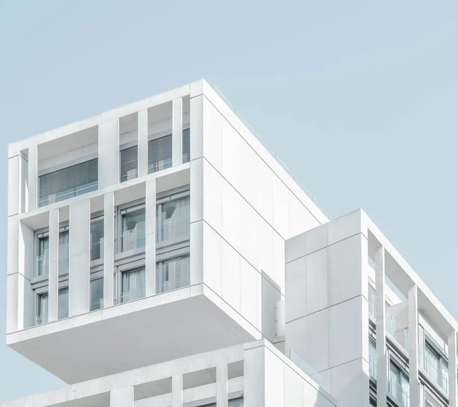
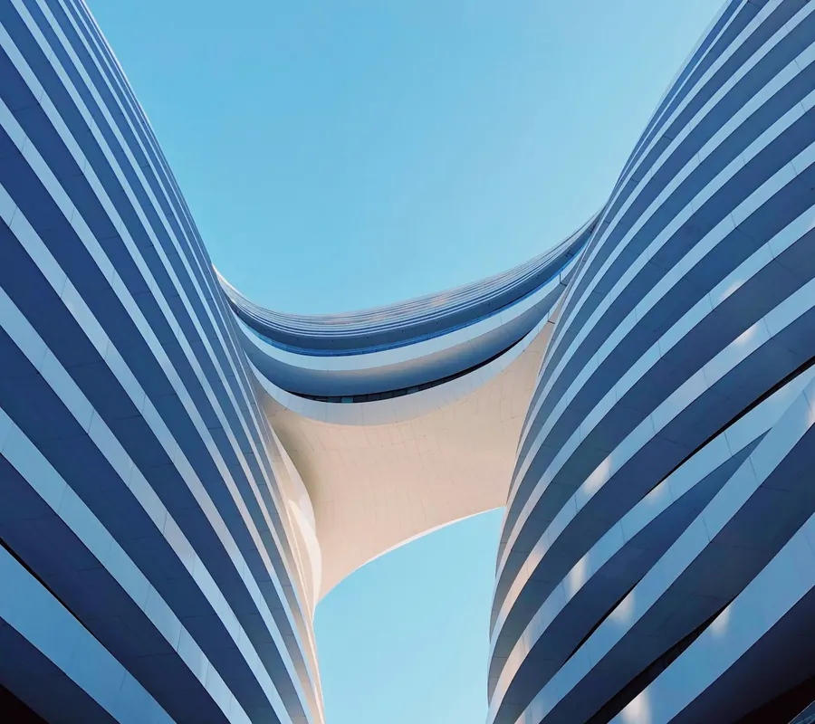
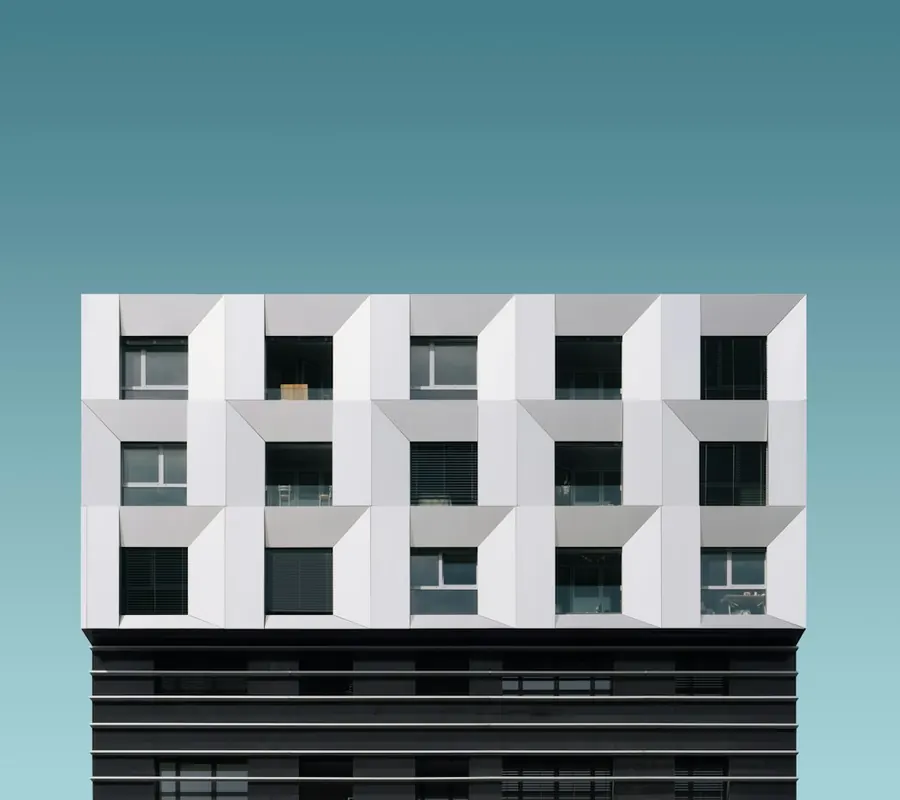

Galleria a fisarmonica
Quattro foto che si sovrappongono come le lame di un ventaglio. Passa sopra una lama (o toccala, o raggiungila con Tab) e si apre, mentre le altre si stringono. L’angolo tagliato sul lato sinistro svanisce sulla lama aperta.
Quattro architetture



Ogni lama occupa tre colonne di una griglia da nove e le lame si sovrappongono di una colonna. Al
passaggio la colonna diventa più larga e grid-template-columns si anima. L’angolo
tagliato usa corner-shape: notch, dove non è supportato resta un angolo arrotondato.
Foto: Unsplash.